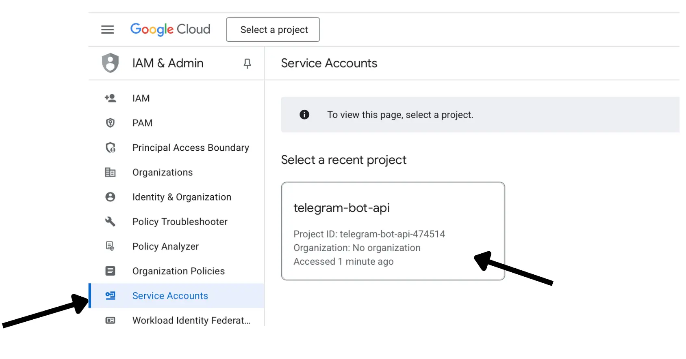
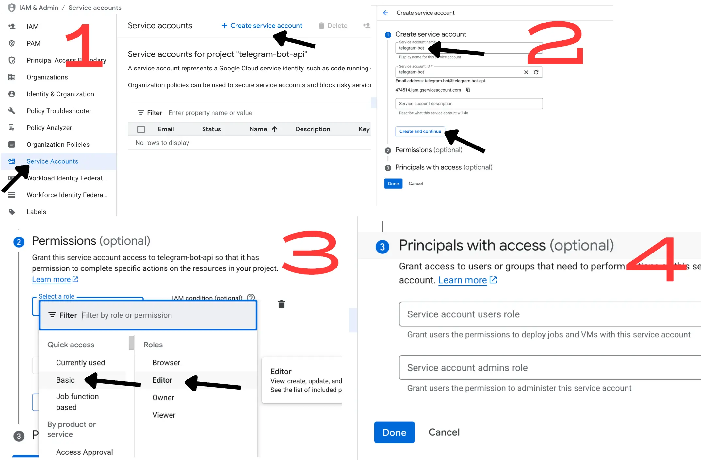
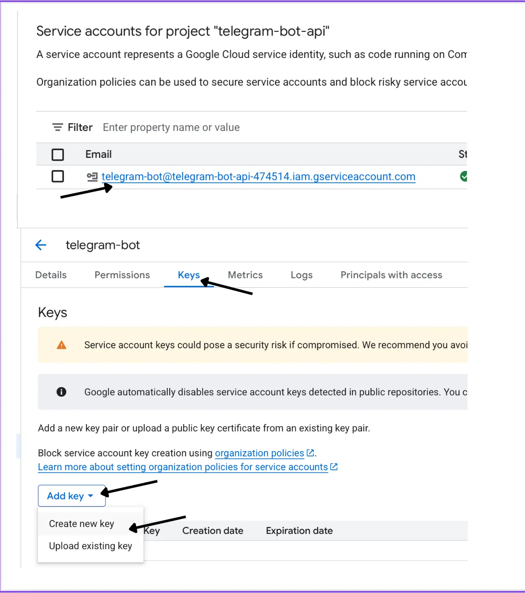
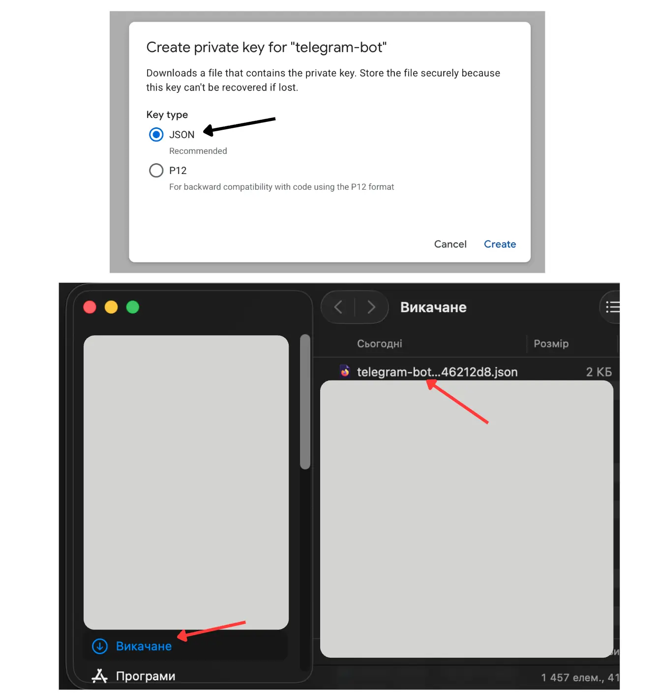
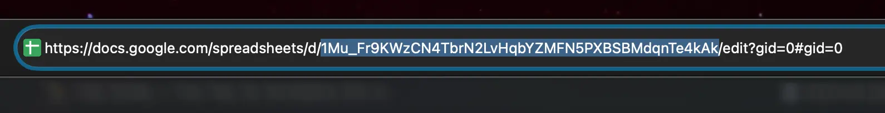
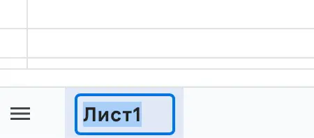
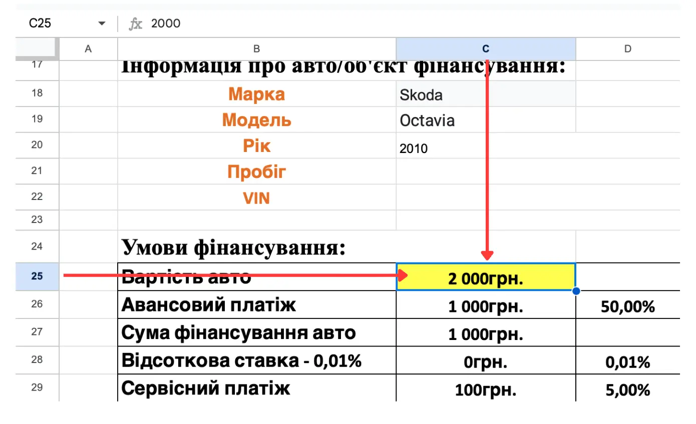
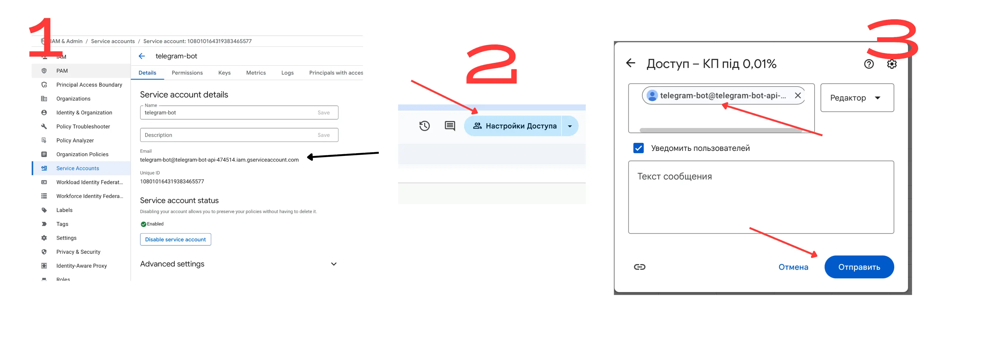

🧭 Інструкція: Як підготувати Google API доступ для Telegram-бота
Ця покрокова інструкція допоможе створити новий проєкт у Google Cloud, увімкнути потрібні API, згенерувати ключ сервісного акаунта та підготувати дані таблиці Google Sheets для роботи бота.
⏱ Орієнтовний час: 10 хвилин. Потрібен лише веббраузер.
На кроці Grant this service account access to the project натисни Select a role.
У списку ролей обери Basic → Editor.
Натисни Continue, потім Done, щоб завершити створення.

Розділ створення сервісного акаунта.

Форма створення — вкажи ім’я telegram-bot, обери роль Editor та заверш створення.
5Згенеруй ключ (JSON)
У списку акаунтів натисни на створений telegram-bot@….
Відкрий вкладку Keys.
Натисни Add key → Create new key.
Обери JSON і натисни Create.
Збережи завантажений файл — це і є ключ для бота.

Перейди на вкладку Keys та додай новий ключ.

Створи ключ у форматі JSON і збережи файл.
6Підготуй дані Google Sheets
Боту потрібні дані з таблиці, щоб підставляти суму в потрібну комірку та експортувати PDF.
Відкрий потрібну таблицю в Google Sheets.
Скопіюй Spreadsheet ID — це довга частина в адресному рядку між /d/ та /edit.
Переконайся, що потрібний лист має назву Лист1 (або запиши фактичну назву для змінної SHEET_NAME).
Визнач комірку, куди бот має записувати суму (наприклад, C25 для змінної SUM_CELL).

У браузері виділено Spreadsheet ID.

Переконайся, що лист називається Лист1 або запам’ятай свою назву.

Визнач комірку (наприклад, C25), куди бот записуватиме суму.
7Надай доступ сервісному акаунту
У таблиці натисни Share (Поділитися).
У поле введи адресу сервісного акаунта (наприклад, telegram-bot@telegram-bot-api.iam.gserviceaccount.com).
Вибери роль Editor і натисни Done.
Якщо PDF створюється з окремого файла на Google Drive — надай йому такий самий доступ.

Додай сервісний акаунт у співавтори з правами Editor.
8Передай ключ і змінні для бота
Після завершення попередніх кроків у тебе є:
Завантажений JSON-файл сервісного акаунта.
Ідентифікатор таблиці (SPREADSHEET_ID).
Назва аркуша (SHEET_NAME, наприклад, Лист1).
Комірка для суми (SUM_CELL, наприклад, C25).
Ці значення потрібно передати розробнику або додати в файл .env бота: